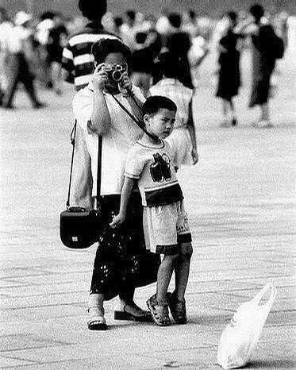
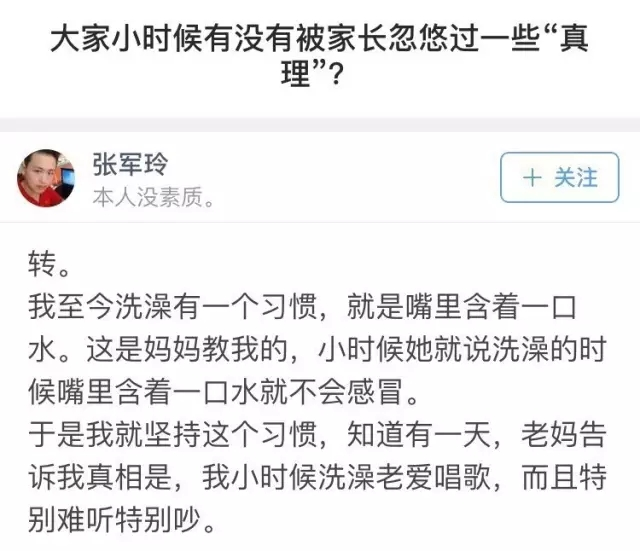

互惠动态
|
|
不是亲生的|世上只有妈妈好？呵呵！
我有时候会怀疑
我真的是我妈亲生的吗？
看了这些答案
我知道有疑虑的
不止我一个……
“一家三口出门郊游
我妈开上高速路十分钟
转头问我爸
女儿上车了吗”
▼
“这是我妈今天给我做的晚餐
妈妈你再这样我真的要离家出走了”
▼
慈母手中线
儿子身上勒
我妈在拍照
让我别乱跑
▼

妈妈眼中
每天在家什么活都不干
就知道坐在餐桌旁等吃饭的我
▼
每次我打扮好出门
我妈看我的眼神
▼
每到冬天
我在家赖床不起
我妈总会用“母爱”
唤醒沉睡的我
▼
我
小时候
就是我妈的
工具
▼
年轻时候
谁没信过几句鬼话
比如
你老实说
妈妈绝对不打你不骂你
▼
长大后才知道
童话里都是骗人的
▼

一过完年就迫不及待来发帖
这位妈妈
你还是人吗
▼
“运动会我妈非让我穿这个
感觉苦心经营的高冷形象都没了”
▼
“我妈今天把我的抱枕给洗了
你们看见猪绝望的眼神了吗？”
▼

妈妈
我好歹是个状元
给我留一点儿面子吧
求你了
▼
当我跟我妈坦白
我是Gay的时候
▼
和我妈打电话
她说她写了首诗
非要发给我看
▼
奥运女排决赛
我去上厕所的时候
中国队拿下了第二局
我妈冲厕所里喊
拿下了！
你一上厕所就拿下了！
你待在厕所别出来了！
▼
当我在商场看中一件东西
我妈却不让我买时
▼
都说
世上只有妈妈好？
呵呵
再这样下去
你将会失去你的宝宝

关于互惠，您了解得够多么？
请外国学生来家庭照顾孩子，辅导孩子外语？
只了解这些是不够的！
获取更多信息请参考以下方式：
联系ASC：
电话：86-21-61116069(上海中心）
86-25-66065662（南京中心）
手机：15601666586（可加微信）
Q Q：3259637585
微信：asc-center
邮箱：info@asc-center.com
网站：www.asc-aupair.com

感谢您对我们的关注